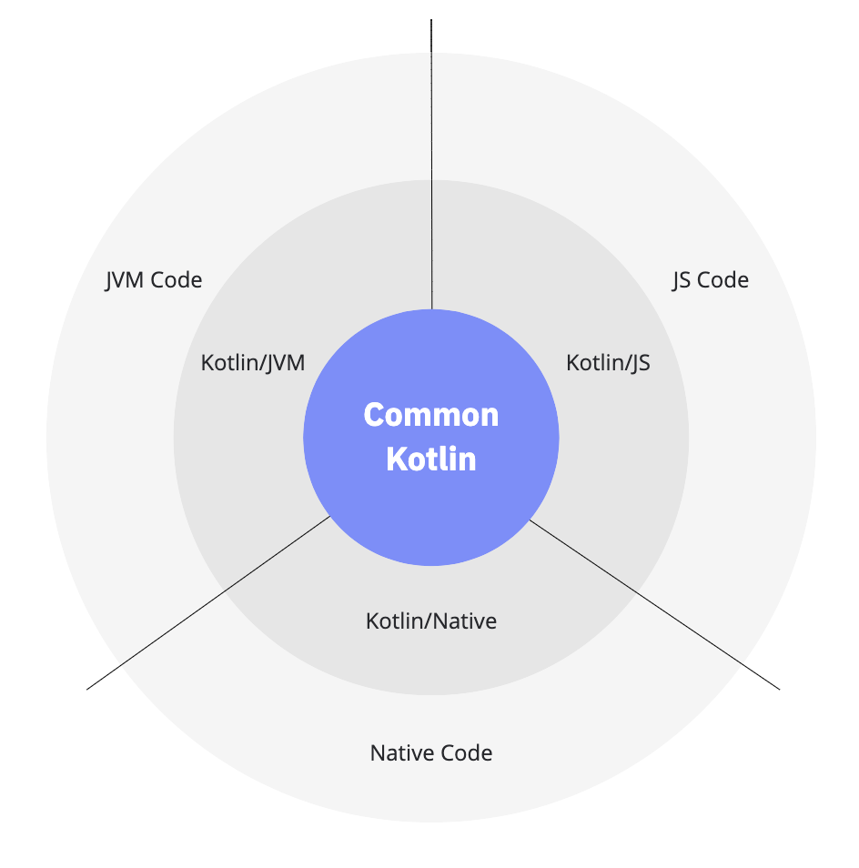
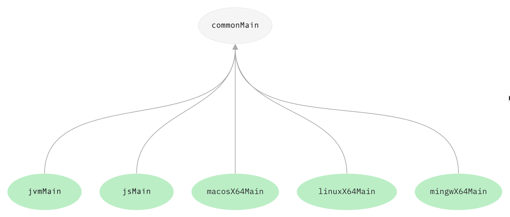
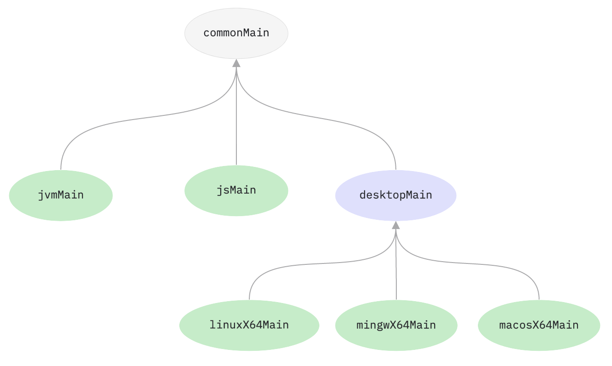
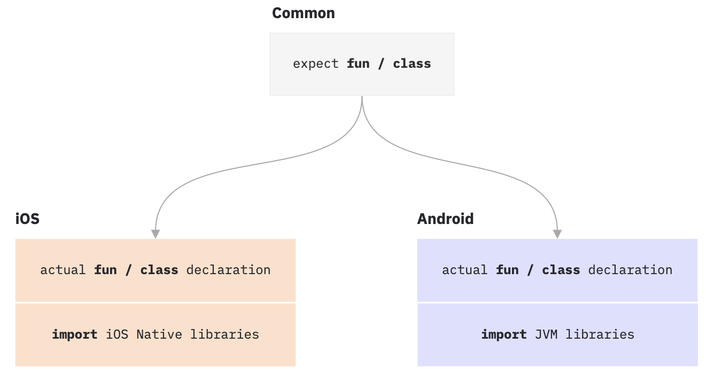

type: doc layout: reference category: "Other"
title: "多平台程序设计"
多平台程序设计
多平台项目处于 Alpha 版。语言特性与工具都可能在未来的 Kotlin 版本中发生变化。 {:.note}
Support for multiplatform programming is one of Kotlin’s key benefits. It reduces time spent writing and maintaining the same code for different platforms while retaining the flexibility and benefits of native programming.
This is how Kotlin Multiplatform works.

- Common Kotlin includes the language, core libraries, and basic tools. Code written in common Kotlin works everywhere on all platforms.
- With Kotlin Multiplatform libraries, you can reuse the multiplatform logic in common and platform-specific code. Common code can rely on a set of libraries that cover everyday tasks such as HTTP, serialization, and managing coroutines.
- To interop with platforms, use platform-specific versions of Kotlin. Platform-specific versions of Kotlin (Kotlin/JVM, Kotlin/JS, Kotlin/Native) include extensions to the Kotlin language, and platform-specific libraries and tools.
- Through these platforms you can access the platform native code (JVM, JS, and Native) and leverage all native capabilities.
With Kotlin Multiplatform, spend less time on writing and maintaining the same code for different platforms – just share it using the mechanisms Kotlin provides:
Share code among all platforms used in your project. Use it for sharing the common business logic that applies to all platforms.

Share code among some platforms included in your project but not all. Do this when you can reuse much of the code in similar platforms.

If you need to access platform-specific APIs from the shared code, use the Kotlin mechanism of expected and actual declarations.
With this mechanism, a common source set defines an expected declaration, and platform source sets must provide the actual declaration that corresponds to the expected declaration. This works for most Kotlin declarations, such as functions, classes, interfaces, enumerations, properties, and annotations.

//Common
expect fun randomUUID(): String
//Android
import java.util.*
actual fun randomUUID() = UUID.randomUUID().toString()
//iOS
import platform.Foundation.NSUUID
actual fun randomUUID(): String = NSUUID().UUIDString()
使用场景
Android——iOS
移动平台之间共享代码是 Kotlin 多平台的主要使用场景之一。 With Kotlin Multiplatform Mobile (KMM), you can build multiplatform mobile applications sharing code, such as business logic, connectivity, and more, between Android and iOS.
See KMM features, case studies and examples
客户端——服务端
代码共享可以带来收益的另一个场景是互联应用，其中的逻辑可以在服务器与运行在浏览器中的客户端中复用。Kotlin 多平台也覆盖了这个场景。
Ktor 框架适用于在互联系统中构建异步的服务器与客户端。
接下来做什么？
New to Kotlin? Visit Getting started with Kotlin.
文档
- Get started with Kotlin Multiplatform Mobile (KMM)
- Create a multiplatform project
- Share code on multiple platforms
- Connect to platform-specific APIs
教程
Creating a KMM application shows how to create a mobile application that works on Android and iOS with the help of the KMM plugin for Android Studio. Create, run, and test your first multiplatform mobile application.
Creating a multiplatform Kotlin library teaches how to create a multiplatform library available for JVM, JS, and Native and which can be used from any other common code (for example, shared with Android and iOS). It also shows how to write tests which will be executed on all platforms and use an efficient implementation provided by a specific platform.
Building a full stack web app with Kotlin Multiplatform teaches the concepts behind building an application that targets Kotlin/JVM and Kotlin/JS by building a client-server application that makes use of shared code, serialization, and other multiplatform paradigms. It also provides a brief introduction to working with Ktor both as a server- and client-side framework.